카카오웹툰 추천 인기 순위 TOP 30
카카오웹툰에서 지금 연재 중인 작품을 카카오웹툰 공식 인기 순위 순서로 모았어요. 네이버웹툰·카카오웹툰·레진코믹스에서 조건에 맞는 작품 944개 중 인기 순으로 30개를 골랐어요. 인기 TOP 3: 오무라이스 잼잼, 야구의 정치, SSS급 죽어야 사는 헌터
2026-11-17 기준 · 성인 작품 제외
내 취향으로 더 좁혀서 추천받기 →-
1
 카카오웹툰
카카오웹툰오무라이스 잼잼
'음식'과 '가족'의 이야기를 담은 에세이 만화. 몇 개라도 먹을 수 있을 것 같은 '메추리알 조림', 빙글빙글 돌아가는 '회전초밥', 지구 반 바퀴 돌아 포르투갈에서 맛본 '에그타르트', 매콤상콤하게 볶아 입맛 도는 '마라샹궈', 짭짤한 밥도둑 '간장게장' 등 우리가 사랑하는 모든…
공감음식&요리카카오웹툰에서 보기 → -
2
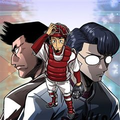
카카오웹툰야구의 정치
구단에서 쫓겨난 야구 코치 맹정진. 선배의 도움으로 겨우 입단한 선데빌스 팀은 파벌 싸움으로 나락에 떨어진 상황. 이곳에서 버틸 방법은 정치밖에 없다. 실력만으론 부족한 야구판에서 살아남기 위해, 맹정진의 ‘정치’가 시작된다.
성장물액션카카오웹툰에서 보기 → -
3
 카카오웹툰
카카오웹툰SSS급 죽어야 사는 헌터
F급 말단 헌터 ‘김공자‘. 랭킹 1위 ‘염제‘를 부러워하던 어느 날, 무려 S+급 스킬을 얻는다. 하지만 기쁨도 잠시, 어째 스킬 내용이 이상하다?! 상대의 스킬 중 1개를 복사한다,까지는 좋은데… "뭐? 내가 죽어야만 발동된다고?!" 죽어야 사는 헌터의 인간찬가 <SSS급 죽어야…
눈물샘자극학원물회귀카카오웹툰에서 보기 → -
4
 카카오웹툰
카카오웹툰템빨
[신영우 (유저 네임: 그리드)] 세계 최고의 가상 현실 게임 <SATISFY>. 현실에서나, 게임 속에서나, 불운은 항상 그의 곁을 맴도는데.... 퀘스트 수행 중 우연히 발견한 게임 속 로또, '파그마의 기서'. 20억 명이 넘는 유저 중 유일한 최강의 레전드리 직업으로 전직. "…
사이다학원물게임판타지카카오웹툰에서 보기 → -
5
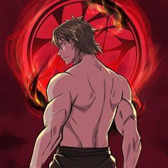
카카오웹툰대사형 선유
삼류 낭인 곽노의 손에 거둬진 아이들. 사제관계를 맺고 아이들은 어설프게나마 무공과 보법 수련을 하며 각자의 꿈을 꾼다. 먹고살기 위해 곽노는 늘 자리를 비워야 했고, 아이들 중 맏이인 선유는 사제들을 돌봐야 한다. 그는 대사형大師兄이다.
눈물샘자극액션가족카카오웹툰에서 보기 → -
6
 카카오웹툰
카카오웹툰가드패스
평소 먹는 것을 좋아해 뚱뚱하고 큰 체격을 가진 '임세준'. 그는 뚱보라는 놀림에도 신경 쓰지 않는 자존감이 높고 확고한 성격을 가졌다. 그에게 단 한 명의 친구 '서하진'. 그녀는 어릴 적부터 세준을 지켜주기 위해 늘 운동을 배워왔다. 어느 날 세준은 같은 반 일진과 트러블이 생기고…
사이다학원물배틀카카오웹툰에서 보기 → -
7
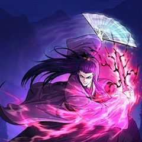
카카오웹툰관존 이강진
미친놈인가? 아니면 흔한 관심종자인가? 사람의 다름을 이해 못 하는 제자 이강진. 그리고 그걸 이해시켜주고자 하는 스승 곽노. 두 사제師弟의 따뜻한 휴먼스토리.
액션성장물카카오웹툰에서 보기 → -
8
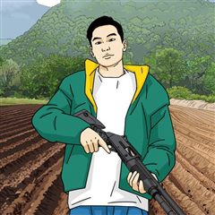
카카오웹툰농부 이삼탁
28세. 미혼의 이삼탁은 다니던 회사를 그만두고 농사를 짓겠다며 고향에 내려와 밭을 구입했지. 그러고는 자신의 직업을 농부라고 인쇄한 명함을 만들어 만나는 이들의 손에 쥐여줬어. 귀촌을 궁금해하는 동네 분들에게 귀찮은 질문과 험담 따위를 듣게 될까 봐. 이삼탁은 명함을 뿌린 거야. 뿌…
성장물카카오웹툰에서 보기 → -
9
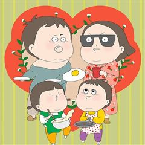
카카오웹툰퀴퀴한 일기
내 주변에 반드시 한 명은 있을 것만 같은, 어쩌면 나 같기도 한 그녀의 일기. 어느덧 40대의 아기 엄마가 된 주인공 이보람과 그의 군단들의 이야기이다. 너무나 시시하고 쩨쩨해서 누구에게 털어놓기도 멋쩍은 일들이 작은 마음을 가진 그들에겐 늘 뜨겁고 강렬하다! 마음속 깊이 숨어있는…
공감개그카카오웹툰에서 보기 → -
10
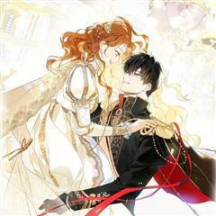
카카오웹툰이번 생은 가주가 되겠습니다
“…한번 해 보자. 내가 가주가 되는 거야.” 제국에서 제일가는 가문, 롬바르디의 사생아로 환생한 피렌티아. 게다가 이 가문은 막대한 부는 물론 외교와 문화까지 통달한 말그대로 제국의 역사 자체! 금수저 오브 금수저 인생 당첨! 앞으로는 탄탄대로일 거라 생각했는데…. 아버지는 돌아가시…
사이다로판회귀카카오웹툰에서 보기 → -
11
 카카오웹툰
카카오웹툰레드스톰 - 왕의 귀환
피에 젖은 사막. 붉은 사막을 용납할 수 없던 한 소년. 소년은 사막의 무신이 되어 사막을 구하지만 이제는 세계가 피에 젖으려 한다. 무신은 이제 사막을 넘어 세계를 구하려 한다. “4년 만에 돌아온 그로우, 왕의 귀환. 이제는 사막에서 전쟁을 보여줘야 할 때다.”
액션성장물카카오웹툰에서 보기 → -
12
 카카오웹툰
카카오웹툰유부녀 킬러
육아휴직을 마치고 회사로 돌아간 5년차 유부녀 유보나. 보나는 저격총을 쥔 채 호텔에 있는 타깃을 향해 총구를 겨눈다. "탕!" 복귀 후 첫 미팅은 암살업무, 보나는 유부녀 ‘킬러’이다. 보나는 자신의 딸 율이와 시어머니가 운영하는 치킨집을 찾았는데, 테이블 뒤편에서 고아인 보나를 험…
카카오웹툰에서 보기 → -
13카카오웹툰
슬프게도 이게 내 인생
"벌어먹고 살아야 하는 현생은 너무 힘들어!" 거친 현대사회에서 이리저리 치이며 어떻게든 적응해보려는 어리바리 슬이와 쉽지 않은 직장 생활에 약간 돌아버린 친구들의 슬프지만 즐겁게 살려고 노력하는 이야기
개그공감카카오웹툰에서 보기 → -
14
 카카오웹툰
카카오웹툰픽 미 업!
그 누구도 던전의 끝까지 오르지 못한 극악의 난이도를 자랑하는 모바일 가챠 게임 <픽 미 업!(Pick me up!)> 마스터 오브 마스터라 불리는 세계 랭킹 5위의 마스터 '로키'는 던전을 깨던 중 정신을 잃게 된다. 깨어나 보니 레벨도 1, 등급도 1성인 <픽 미 업!> 속 영웅…
사이다액션게임판타지카카오웹툰에서 보기 → -
15
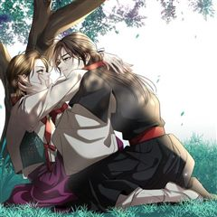
카카오웹툰비에 젖은 흔적들이다
그날 내가 잃어버린 것은 너일까, 나일까. 그리고 내가 다시 찾은 것은 나일까, 너일까. 아니면 우리일까. 14년 전 그날 홀로 남겨진 동경은 갈 길을 잃은 채 그 자리에 멈춰버렸다. 차가운 세상에 대한 믿음도 유대도 기대도 없다. 절망도 없다. 나조차도 없다. 껍데기만 어른이 되어버…
설렘폭발시대물카카오웹툰에서 보기 → -
16
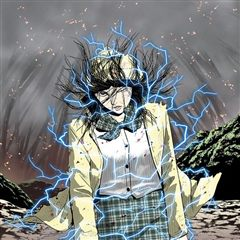
카카오웹툰별종
외계 물체를 발견하고 휘말린 아이들. 첫발부터 대차게 꼬인 불청객의 비애. "너 그렇게 안 봤는데?" 귀엽기만 했던 조카의 충격적인 실체. 타임 루프, 재난, 종말, 살상, 사투 등 사건 사고가 쉴 새 없이 터진다.
아포칼립스카카오웹툰에서 보기 → -
17
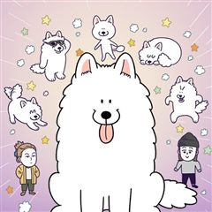
카카오웹툰극한견주 시즌2
약 먹기 싫어! 병원 가기 싫어! 내가 좋아하는 것만 하면서 살 거야! 9살 솜이, 어엿한 중년견이 되었으니 모든 게 순조로울 줄 알았다. B.U.T 우끼빡기도 안 하고, 미사일 발사도 안 하지만 어쩐지… 지능캐가 되어버렸다고나 할까? 그렇다고 물러날 수는 없다. 집사 10년차, 무엇…
개그힐링카카오웹툰에서 보기 → -
18
 카카오웹툰
카카오웹툰무한의 마법사
마굿간에 버려져 평민으로 키워진 아이, 시로네. 타고난 통찰력으로 글까지 깨우친 아이는 도시로 나간 어느 날 그토록 궁금해하던 마법을 경험한다. 그 길로 마법사를 꿈꾸게 된 시로네. 하지만 신분의 장벽이 두터운 이 곳은 아이에게 냉혹하고, 그는 채 어른이 되기도 전에 이 세상의 이면을…
미스터리학원물성장물카카오웹툰에서 보기 → -
19카카오웹툰
배드 비즈니스
미국 뒷세계의 전설적인 청부업자 제이는 북미 최대의 킬러 회사인 유니온의 의뢰로 자신의 친구인 조니가 설립한 킬러 회사를 자기 손으로 무너뜨린다. 의뢰를 수락한 조건은 조니의 목숨은 살려주는 것이었지만, 유니온의 배신으로 조니와 자신 모두 살해당하게 된다. 그러나 신비한 힘에 의해 한…
서스펜스액션전쟁카카오웹툰에서 보기 → -
20
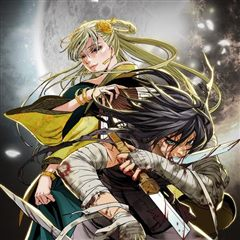
-
21
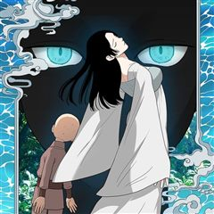
카카오웹툰푸른 눈의 책사
적법한 왕의 핏줄을 타고난 두 형제는 가짜 왕을 몰아내고 군위에 오를 것을 결심한다. 갈대밭에 숨어 옆 나라로 건너가 조력자들을 만나려는 그들에게 장사치는 푸른 눈의 책사에 대한 경고를 한다.
시대물카카오웹툰에서 보기 → -
22
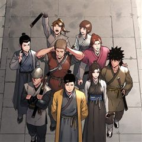
카카오웹툰군림천하
"너만은 꼭 군림천하 해야 한다!” 그 한마디로 진산월의 운명이 결정됐다. 스물세 살, 그는 종남파의 장문인이 되었다. 남은 이들은 단 8명의 제자뿐. 한때 천하제일을 꿈꿨지만, 지금은 명맥만을 잇는 문파. 사부의 유지를 위해, 살아남기 위해— 진산월은 비정한 강호로 나아간다.
자극적인성장물액션카카오웹툰에서 보기 → -
23카카오웹툰
괴담에 떨어져도 출근을 해야 하는구나
[ ⚠️ 해당 작품에는 공포 연출 및 폭력적·잔혹한 장면이 포함되어 있습니다. 이용에 참고 부탁드립니다. ] 소중한 연차까지 내고 갈 정도로 좋아하던 '어떤 현대판타지' 팝업 이벤트. 그리고 그날, 그 현판 속으로 빙의당했다. 무려 유명 대기업에 막 취직한 신입사원으로! 복지 좋고 연…
미스터리카카오웹툰에서 보기 → -
24
 카카오웹툰
카카오웹툰엄마가 계약결혼 했다
리리카는 술주정뱅이 어머니를 모시고 하루하루 먹고 사는 빈민가의 소녀다. 그러던 어느날...... “꺄악, 뜨거워! 싫어!” 어머니가 비명을 지르며 잠에서 깨어나더니, “리리,살아있구나, 어려졌니?” 엉뚱한 소리를 하시고 “오늘이 며칠이지?” 정신을 못 차리시더니 “이럴수가, 돌아왔어…
힐링로판육아물카카오웹툰에서 보기 → -
25
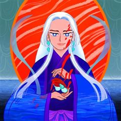
카카오웹툰인어기담
내가 바뀌고 있다. 인어 고기는 불로불사의 영약이 아니었던 걸까? 고려 말, 전쟁을 피해 도망치던 한 귀족 소녀가 살기 위해 인어 고기를 먹는 순간 그 소녀의 쌍둥이 동생, 그녀가 새로이 정착한 마을 사람들, 그녀가 운명의 짝이라 믿게 된 한 남자의 운명이 파란만장의 소용돌이 속으로…
자극적인복수극카카오웹툰에서 보기 → -
26
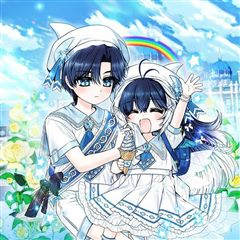
카카오웹툰흑막 범고래 아기님
“안녕 아저씨!” 어느 날 내 앞에 웬 범고래 꼬맹이가 나타났다. “교육기관이라는 거 어디 있는지 알아? 나 가야 해. 거기.” “길, 한참은 잘못 들었는데.” 아무래도 이건 내 딸인 것 같은데. “뭘 봐 아저씨? 한 입 줘?” 내가 아비인 줄 모르는 것 같다. * * * ……라고 생…
로판육아물카카오웹툰에서 보기 → -
27
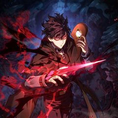
카카오웹툰철혈검가 사냥개의 회귀
바스커빌 가문의 사냥개 '비키르'. 사냥개로서 가문에 충성한 보답은 모함과 누명으로 얼룩진 단두대의 칼날이었다. "다시는 토끼를 잡고 나면 삶아지는 사냥개처럼 살지 않겠노라." 그런 그에게 죽음 대신 찾아온 뜻밖의 기회. 어둠 속에서 송곳니를 갈고닦는 비키르의 눈이 붉게 빛났다. "기…
학원물복수극카카오웹툰에서 보기 → -
28
 카카오웹툰
카카오웹툰검술명가 막내아들
진 룬칸델 대륙 최고의 검술명가, 룬칸델의 막내아들 룬칸델 역사상 최악의 둔재 비참하게 쫓겨나 허무한 최후를 맞이한 그에게 다시 한 번 기회가 주어졌다. “너는 이 힘을 어떻게 사용하고 싶더냐?” “저를 위해 사용하고 싶습니다.” 전생의 기억과 압도적인 재능, 그리고 신과의 계약 최강…
액션회귀카카오웹툰에서 보기 → -
29
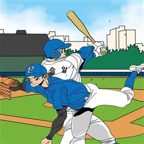
-
30카카오웹툰
권왕전생
인간들이 이종족을 노예로 부리는 세상. 대마도사 '레펜하르트'는 이종족들을 돕는다는 이유로 인간들에게 마왕 취급을 받는다. 마왕을 토벌하기 위해 온 용사 일행! '레펜하르트'는 그에 맞서 용사 일행에게 큰 피해를 주는 것에 성공하지만, 결국 권왕 '테스론'에게 죽임당할 위기에 처하는데…
학원물성장물카카오웹툰에서 보기 →